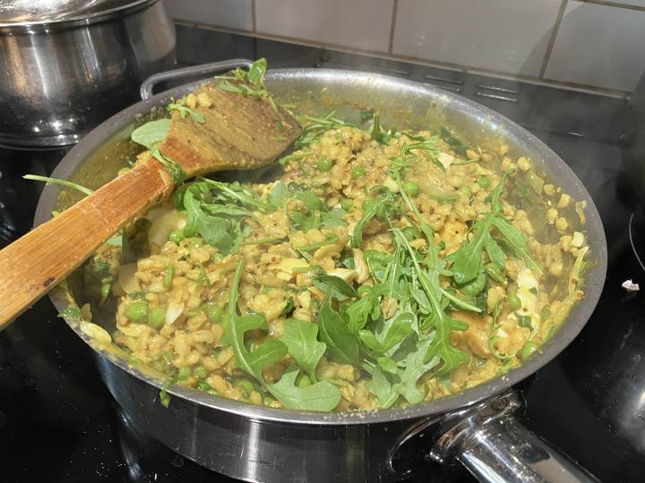

20.01.2024

1 cup barley 4 cup water
25min release natural
Gently steam 2 smoked haddock fillets
Hard boil 4 eggs
Fry until golden (medium high)
Onion
Garlic
Fresh green chilli
Seeds of 1Black cardamon
1/4 tsp Fenugreek
1 tsp mustard seeds
1 bay leaf
When onions golden turn heat to medium snd add
Cooked barley
1 tbl cumin
1 tsp turmeric
1 tsp garam masala
Salt
Pepper
Cook 5 mins
Squeeze half lemon
Taste. Add cumin, salt. Chilli powder if you need to
Add cooked smoked haddock and hard boiled eggs. Break up gently. Add water from cooked haddock if it needs loosening
Cook 5 min
Add handful fresh coriander and green leaves (rocket, spinnach, mix baby leaf salad) - go for it! Greener the better.
Taste…. Add lemon, salt, cumin as needed.
Serve with yogurt, pickle